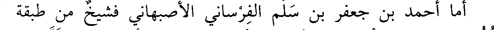
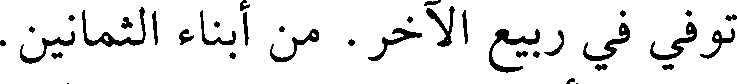
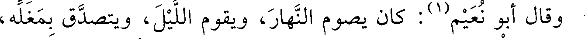
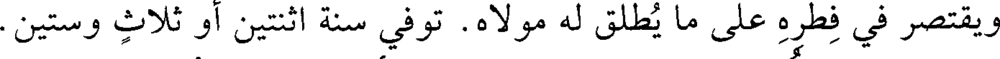
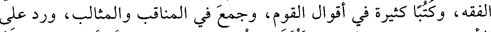
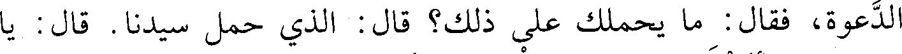
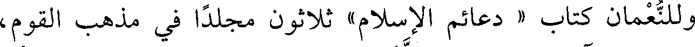

File: 000690.gt.txt (if the image is defective, simply delete all Arabic text and the line will be excluded)
القراءات والتفاسير أمرا عظيما. وولد سنة ثمان وسبعين ومئتين.
File: 000691.gt.txt (if the image is defective, simply delete all Arabic text and the line will be excluded)

أما أحمد بن جعفر بن سلم الفرساني الأصبهاني فشيخ من طبقة
File: 000692.gt.txt (if the image is defective, simply delete all Arabic text and the line will be excluded)
الختلي، سمع أحمد بن عمرو البزار. روى عنه أبو سعيد النقاش،
File: 000693.gt.txt (if the image is defective, simply delete all Arabic text and the line will be excluded)
وقال : توفي سنة أربع وأربعين وثلاث مئة.
File: 000694.gt.txt (if the image is defective, simply delete all Arabic text and the line will be excluded)
144 - أحمد بن محمد بن علي بن عمر، أبو العباس النيسابوري
File: 000695.gt.txt (if the image is defective, simply delete all Arabic text and the line will be excluded)
المذكر.
File: 000696.gt.txt (if the image is defective, simply delete all Arabic text and the line will be excluded)
سمع أباه، وإبراهيم بن علي الذهلي. وعنه الحاكم.
File: 000697.gt.txt (if the image is defective, simply delete all Arabic text and the line will be excluded)

توفي في ربيع الآخر. من أبناء الثمانين.
File: 000698.gt.txt (if the image is defective, simply delete all Arabic text and the line will be excluded)
145 - أحمد بن موسى بن الحسين بن علي، أبو بكر ابن
File: 000699.gt.txt (if the image is defective, simply delete all Arabic text and the line will be excluded)
السمسار الدمشقي.
File: 000700.gt.txt (if the image is defective, simply delete all Arabic text and the line will be excluded)
سمع محمد بن خريم، وأبا الجهم بن طلاب، ومكحول البيروتي،
File: 000701.gt.txt (if the image is defective, simply delete all Arabic text and the line will be excluded)
92 - نافع بن عبدالله، أبو صالح الخادم، مولى القاضي عبدالله بن
File: 000702.gt.txt (if the image is defective, simply delete all Arabic text and the line will be excluded)
محمد بن عمر الأصبهاني.
File: 000703.gt.txt (if the image is defective, simply delete all Arabic text and the line will be excluded)
يروي عن عبدالله بن محمد بن عبدالكريم الرازي. وعنه أبو نعيم،
File: 000704.gt.txt (if the image is defective, simply delete all Arabic text and the line will be excluded)
وأبو بكر بن أبي علي.
File: 000705.gt.txt (if the image is defective, simply delete all Arabic text and the line will be excluded)

وقال أبو نعيم(1) : كان يصوم النهار، ويقوم الليل، ويتصدق بمغله،
File: 000706.gt.txt (if the image is defective, simply delete all Arabic text and the line will be excluded)

ويقتصر في فطره على ما يطلق له مولاه. توفي سنة اثنتين أو ثلاث وستين.
File: 000707.gt.txt (if the image is defective, simply delete all Arabic text and the line will be excluded)
93 - النعمان بن محمد بن منصور، أبو حنيفة المغربي القاضي.
File: 000708.gt.txt (if the image is defective, simply delete all Arabic text and the line will be excluded)
قال المسبحي في «تاريخ مصر» : كان من أهل الفقه والدين والنبل،
File: 000709.gt.txt (if the image is defective, simply delete all Arabic text and the line will be excluded)
وله كتاب «أصول المذاهب» .
File: 000710.gt.txt (if the image is defective, simply delete all Arabic text and the line will be excluded)
وقال غيره : كان المتخلف مالكيا، ثم تحول إلى مذهب الشيعة لأجل
File: 000711.gt.txt (if the image is defective, simply delete all Arabic text and the line will be excluded)
الرياسة، وداخل بني عبيد، وصنف لهم كتاب «ابتداء الدعوة» ، وكتابا في
File: 000712.gt.txt (if the image is defective, simply delete all Arabic text and the line will be excluded)

الفقه، وكتبا كثيرة في أقوال القوم، وجمع في المناقب والمثالب، ورد على
File: 000713.gt.txt (if the image is defective, simply delete all Arabic text and the line will be excluded)
الأئمة. وتصانيفة تدل على زندقته وانسلاخه من الدين، أو أنه منافق، نافق
File: 000714.gt.txt (if the image is defective, simply delete all Arabic text and the line will be excluded)
القوم، كما ورد أن مغربيا جاء إليه فقال : قد عزم الخادم على الدخول في
File: 000715.gt.txt (if the image is defective, simply delete all Arabic text and the line will be excluded)

الدعوة، فقال : ما يحملك على ذلك؟ قال : الذي حمل سيدنا. قال : يا
File: 000716.gt.txt (if the image is defective, simply delete all Arabic text and the line will be excluded)
ولدي نحن أدخلنا في هواهم حلواهم، فأنت لماذا تدخل؟
File: 000717.gt.txt (if the image is defective, simply delete all Arabic text and the line will be excluded)

وللنعمان كتاب « دعائم الإسلام» ثلاثون مجلدا في مذهب القوم،
File: 000718.gt.txt (if the image is defective, simply delete all Arabic text and the line will be excluded)
و«منهاج شرح الآثار» خمسون مجلدا، وغير ذلك. وكان ملازما للمعز أبي
File: 000719.gt.txt (if the image is defective, simply delete all Arabic text and the line will be excluded)
تميم، وولي القضاء له على مملكته، وقدم مصر معه من المغرب.
To Save: `Ctrl+s`, make sure to choose `Webpage, complete`!